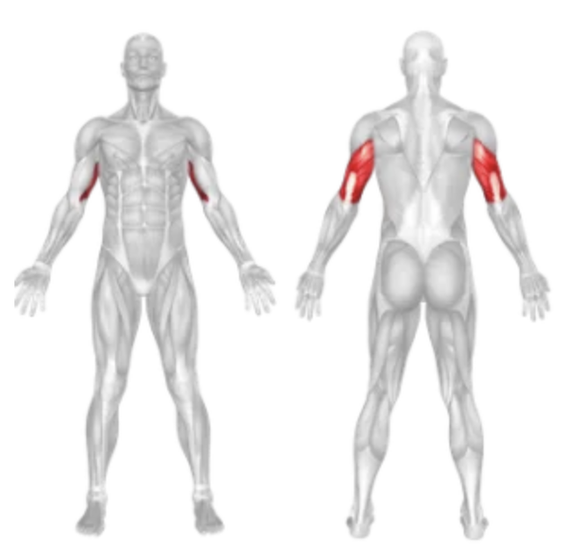

Setup
- Attach a straight or angled bar to the high pulley of a cable machine.
- Stand upright facing the machine, feet shoulder-width apart, and grasp the bar with an overhand grip (palms facing down), hands about shoulder-width apart.
- Keep your elbows close to your torso and forearms pointing upward towards the pulley.
- Engage your core and slightly lean forward at the hips while keeping your back straight.
Execution
- Push Down: Exhale and push the bar downward by extending your elbows until your arms are fully straightened (but not locked out).
- Control the Return: Inhale as you slowly allow the bar to rise back up to the starting position, resisting the weight and keeping your elbows pinned to your sides.
- Repeat for the desired number of repetitions.
Tips for Effectiveness
- Keep Elbows Tucked: Avoid flaring your elbows to maintain triceps isolation and reduce shoulder involvement.
- Use a Full Range of Motion: Extend your arms fully at the bottom and allow for a full stretch at the top.
- Avoid Momentum: Perform the movement in a controlled manner to maximize muscle engagement.
- Wrist Position: Keep your wrists straight to avoid unnecessary strain.
Benefits of Bar Push Down
- Triceps Isolation: Effectively targets the lateral and long heads of the triceps.
- Improves Arm Definition: Helps build stronger, more defined triceps.
- Low Joint Stress: A cable-based movement that is easy on the elbow and shoulder joints.
- Versatile Equipment: Can be performed with different bar attachments (straight, V-bar, rope) for variation.
Muscles Worked in Bar Push Down
